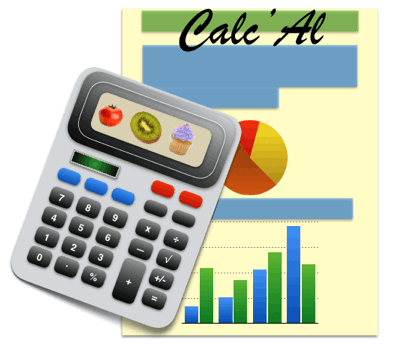
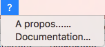

CalcAl
maintenance
Prérequis
Pour modifier CalcAl, vous devez disposer :
Exécution du code dans un terminal
Sous Mac OS X et Linux, ouvrez une fenêtre Terminal.
Sous Windows, ouvrez une fenetre de commande avec les touches Windows +
R.`
Allez dans le répertoire créé lors du décompactage du .zip
Effectuez vos modifications dans les fichiers sources.
Lancez l'application avec le script CalcAl.sh ous Mac OS
X et Linux, ou CalcAl.bat sous Windows.
Les messages de l'application apparaissent alors dans la fenêtre de
commande et les
messages de l'application (log) sont disponibles sous votre Home sous
CalcAl_data/log/messages.
Fichiers de paramétrage
Le paramétrage de l'application est basé sur le package python3
standard configparser.
Une des premières actions de l'application dans son programme principal
CalcAl.py est de charger le fichier de paramètre
CalcAl.ini situé à la racine du répertoire d'installation de
l'application.
Ce fichier contient des clés et leurs valeurs réparties en sections
dont le nom est entre crochets.
CalcAl récupère ces clés dans les fichiers sources python par des
instructions du genre :
configApp.get('Section', 'Cle')
Depuis la version 0.53, le système de logging pour l'enregistrement des messages est paramétré dans le fichier logging_config.ini : des commentaires vous indiqueront comment définir la gestion des messages.
Version du code
La version courante du code est définie dans la section [Version]
de CalcAl.ini par les clés Date et Number. Le
numéro de version est utilisé dans les script qui fabriquent les
packages Mac et Windows.
Les numéros de version du code sont de la forme Version.Release.
Version est supérieur à zéro pour les version publiable, 0 pour
les versions de développement.
Un historique des version est disponible dans le fichier doc/versions.txt
du répertoire d'installation.
Messages et
internationalisation
L'application CalcAl utilise le package gettext
pour l'internationalisation de tous les messages et intitulés des
widgets de l'Interface Homme Machine. L'application utilise la locale
(convention de langue) détectée par CalcAl.py/setLocaleCalcal() ou le
français si la langue par défaut de l'ordinateur n'est pas définie dans
le système de traduction des messages ou la locale ne peut pas être
récupéré. paramétré dans la section [DefaultLocale] de CalcAl.ini.
Dans les fichiers sources .py, les messages apparaissent en version
anglaise comme des chaine de caractère entourés de _("message in
english") . La définition du système de traduction est mise en place
dans CalcAl.py par : import gettext, setLocaleCalcal() qui défini le
chemin et le nom du fichier de traduction : CalcAl.ini et clés
[Resources]/LocaleDir et [Resources]/MessageNameFile.
Le chemin du fichier de messages est de la forme :
locale/<LANG>/LC_MESSAGES/messages.po avec <LANG> le
code à deux lettres du pays
: fr, en... Si vous créez un nouveau message vous devez fournir sa
traduction dans les fichiers messages.po modifiables avec un
simple
éditeur de texte par un couple de ligne du genre :
msgid "Directory created"
msgstr "Répertoire créé"
Après toute modification dans ce fichier, vous devez le recompiler
en le passant à l'outil gettext : msgfmt messages.po
Les noms des composants sont traduits grace au fichier
locale/<LANG>/componants_shortcuts.txt avec <LANG> le code à deux lettres du pays
: fr, en...
Fichiers de Log
L'application CalcAl utilise le package python3 standard logging
pour
contrôler l'enregistrement de tous les évennement de l'application :
journal. Ce système est mis en place dans CalcAl.py/initLogging().
Les messages sont enregistrés dans deux fichiers journaux situé dans le
répertoire utilisateur CalcAl_data/log. par des appels à une
méthode d'une instance de logging.getLogger() : logger.debug(),
logger.warning(), logger.info(). Ces messages sont
internalionalisés et datés :
2017-02-14 20:59:39,714 :: INFO :: Démarrage du calculateur avec la
base ciqual2016.db
Le paramétrage de ce système est réalisé dans la section [log]
de CalcAl.ini et depuis la version 0.53, dans le fichier logging_config.ini
Tests unitaires
L'application possède une batterie partielle de test unitaires
utilisées pour vérifier la non-régression du code.
Répertoire : unittest
Script de lancement : unittest.sh
Génération d'un programme d'installation
Génération d'un installer Windows
La génération d'un programme d'installation Windows est automatiséee
dans le script package_win.bat.
Ce script utilise les logiciels :
- py2exe et le script setup_win.py pour créer un
exécutable .exe pour Windows à partir des .py de l'application.
- Inno Setup pour créer un installateur Windows à l'aide des
directives contenues dans calcal.iss.
Pensez à mettre à jour la version du code dans ce fichier.
Génération d'un installer Mac
La génération d'un programme d'installation Mac OS X est automatiséee
dans le script package_mac.sh.
Ce script utilise le logiciel py2app et le script setup_model.py
pour créer un exécutable .app à partir des .py et des ressources de
l'application. Cet exécutable est ensuite packagé dans un fichier
archive .dmg.
Import des bases de données
Les bases de données CIQUAL et USDA ne sont pas fournies avec CalcAl.
Les données de ces bases sont la propriété des organismes
gouvernementaux qui les publient et ne peuvent pas être fournies avec
le logiciel CalcAl.
C'est à l'utilisateur de télécharger leurs fichiers d'initialisation
depuis Internet puis de les importer dans CalcAl.
Une base de demo est cependant incluse mais n'offre que les aliments
moyens issus de la Ciqual 2017.
L'import est réalisé par des modules optionnel (plugins) du package database
: Ciqual_Reader.py et USDA_28_Reader.py.
Ce mode de distribution de modules optionnels n'est cependant pas
compatible avec les installateurs Windows et Mac.
La table Ciqual version 2016 ne fournissant plus les codes constituant,
ces derniers sont récupérés dans le fichier resources/databases/ciqual_2016_constituants_Codes.txt
de façon à etre homogène avec la version 2013.
Pour la table USDA SR28, les codes, noms et unités des constituants
sont reconstitués à l'aide du fichier resources/databases/usda_constituants.txt.
Modification de la
documentation du projet
La documentation du projet que vous consultez est localisée dans le
dossier CalcAl_doc/<LANG> du répertoire d'installation de
l'application. Elle est accessible par le menu ? / Documentation
de l'interface graphique.

Les clés suivantes de la section [Resources]
de CalcAl.ini permettent au logiciel d'y accéder :
- DocumentationDir : nom du dossier hégergeant la
documentation
- DocumentationIndexFile : Nom du fichier HTML d'entrée de
la documentation.
Fonctionnement en réseau
Cette fonctionnalité doit être validée.
Il est possible de définir un emplacement réseau commun pour les bases de données.
Il faut alors lancer l'application CalcAl par un script calcal.bat ou calcal.sh qui fournit l'option -b ou --baseDirPath au module CalcAl.py.
Techniques utilisées
- Portable, multi plateforme :
- Des tests sont réalisés pour exécuter du code spécifique à une
plateforme : Darwin (Mac) ou Windows.
- Le code source python est encodé en utf-8.
- Les accents sont supportés
- Les readers des bases de données décodent les fichiers
d'initialisation iso8859_1 (USDA_28_Reader.py) et cp1252
(Ciqual_Reader.py)
- S'adapte à la taille de l'écran : voir gui/CalcAlGUI.py/__init__() les
seuils sont définis dans CalcAl.ini : dans la section [Limits],
clés heightBigScreenInPixel et heightSmallScreenInPixel
- Performances : Multithreading pour la recherche d'aliment : 1
thread GUI + 1 Thread SearchThreadedTask.py pour les accès à la base de
données, communication des messages par Queue entre les 2 Threads.
- Design Pattern MVC : Un modèle de données (package model) contient les infos sur les produits
affichés et décide des rafraichissement de l'IHM (package gui) ce qui permet un gain
de performance et un découplage entre les données et l'IHM.
- Base de donnée interne Sqlite : Toutes les données sont
regrouppées en bases de données relationnelles indépendante gérées par
le package database. Chaque base est composée de 10 tables
(V0.51). Le format d'encodage des données est UTF-8.
Justification des choix
- Le langage de programmation choisit est python,
pour des raisons de portabilité sur les système Windows, Mac OS X et
Linux. Ce langage interprété possède une grande richesse fonctionnelle.
La version 3 offre un support étendu des jeux de caractères et facilite
l'internationnalisation.
- L'Interface Homme Machine est basée sur Tkinter
car il est distribué habituellement dans les distributions Python et
fonctionne sur toutes les plateformes.
- HTML est un format de données adapté à la
documentation et lisible par de nombreux navigateurs.
- Le patron de conception Modèle-Vue
permet de découpler les données de leur affichage dand l'IHM. Il permet
d'améliorer les performances par une gestion des données par le modèle
qui décide si les données de l'IHM doivent être raffraichie.
Problèmes connus
- Sur Mac OS X version X.12 ou moins, la version de Tk est obsolète
: 8.5. Cette version ne supporte pas certains caractères accentué comme
l'accent circonflexe dans les zones de saisie. Un crash violent de
l'application se produit. La version Active TCL Tk 8.5.18 corrige ce
problème, mais les bulles d'aide n'apparaissent plus.
- Problème de certification des exe et .app non traités
actuellement.
Chapitre précédent : Utilisation
- Chapitre
suivant : Versions
Copyleft (c) 2018 - Perrine et Thierry
Maillard
Vous avez la permission de copier, distribuer ou modifier ce document
selon les termes de la licence GNU de documentation libre, dans sa
version 1.3 ou dans toute version ultérieure publiée par la Free
Software Foundation ; sans Section Invariante, sans Texte De Première
De Couverture, et sans Texte De Quatrième De Couverture.
Une copie de cette licence est incluse dans la section intitulée
"Licence GNU de documentation libre" : GNU Free Documentation
License.
Une copie de cette Licence est incluse dans le fichier gfdl.1.3-js.fr.html